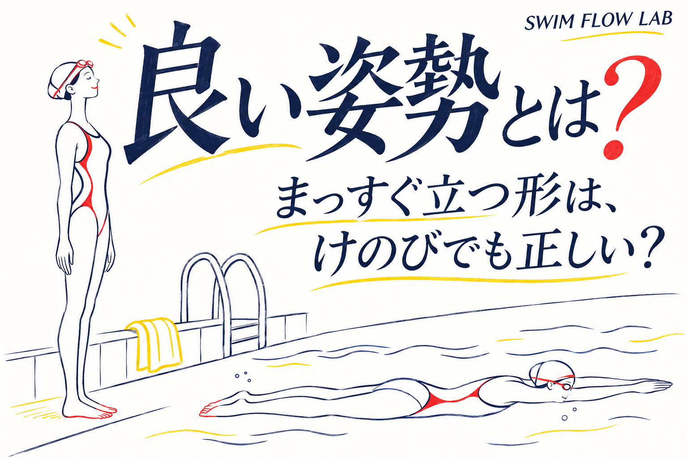
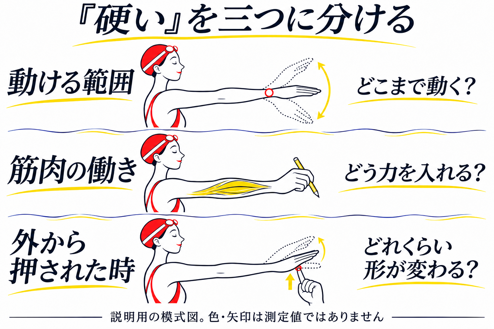
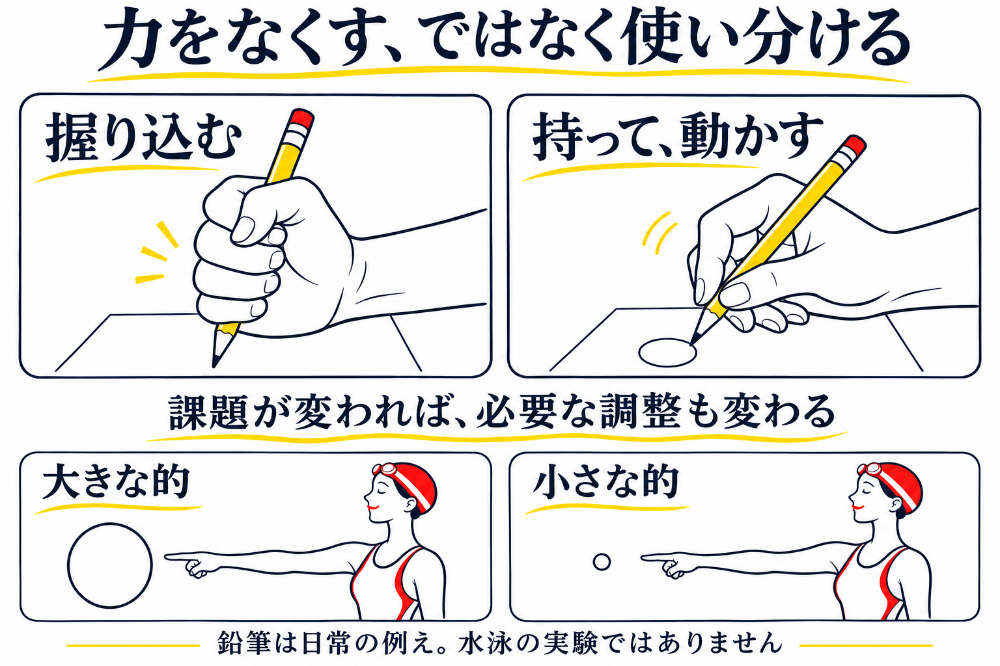

2026年11月18日 公開
良い姿勢とは？ まっすぐ立つ形は、けのびでも正しい？

「姿勢をよくして」と言われたら、身長を測る時のように背を伸ばす人は多いでしょう。頭を起こし、身体をまっすぐにする。その形を覚えてから水に入れば、けのびもよくなるのでしょうか。
たとえば、立っている時には「肩の力を抜いて」と言われ、けのびでは「腕を耳の横に」と言われる。同じ良い姿勢のはずなのに、指示が違って聞こえます。ここで迷うのは、姿勢の覚え方が悪いからとは限りません。身体にさせたい仕事が違うのです。
先に答えを言うと、立つ姿勢は身体を見直す入口にはできますが、立つ見本を横に倒すだけでは、けのびの答えにはなりません。 何をするための形か、その時に身体全体はどう並んでいるか、その形をどんな力加減で保つか。この順番で見ると、「きれいに見える」と「動作に合っている」を分けて考えられます。
まっすぐにするのは、どこに対して？
身長を測る時は、立った身体を上へ伸ばす場面です。けのびでは、両腕を頭の先へ伸ばした身体が、水の中を進みます。身体を横にするだけでなく、腕の位置も変わります。まず比べたいのは、この違いです。

肩甲骨は、背中の上の左右にある平たい骨です。腕を下ろして立つ時と、両腕を頭上へ伸ばす時では、肩まわりの動きも変わります。「立って肩の力を抜く」と「腕を挙げても肩甲骨を下へ固定する」は、同じ指示ではありません。
無症状の成人12人が腕を上げ下げした研究では、腕の挙上に伴い、肩甲骨も上方へ回転し、後ろへ傾く動きが観察されました。水泳の実験ではありませんが、腕だけを動かし、肩甲骨は同じ場所に置いておく、という理解では足りないことが分かります。Bramanらの原著
「肩を楽にする」は、肩甲骨を同じ場所に押さえつけることではありません。腕を頭上へ運ぶ時には、肩まわりも一緒に動く。立つ姿勢からけのびへ進む時、まず更新したいのはこの理解です。次は、腕を伸ばした後の身体全体へ目を広げます。
けのびは、腰の角度一つで決まらない
けのびで胸を張り、腰を大きく反れば「長くなった」と感じるかもしれません。しかし、自分の感じる伸びと、水中での身体の輪郭は同じものではありません。

Papicらは、国内大会水準の泳者11人に、映像と言葉を使った個別の助言を行い、その前後の水中グライドを調べました。壁を蹴った後、手足を動かさずに進む1.5秒間を分析しています。助言後には、胸・腰・臀部へ続く輪郭の急な変化が小さくなり、この区間の平均速度が高くなりました。ただし、複数の助言を合わせた短期の前後比較です。「お腹を引く」という一言や、腰の一か所だけの効果を取り出したものではありません。Papicらの原著
一方、男子大学競泳選手23人を調べたNaraらの研究では、陸上でうつぶせになり、腕を頭上に伸ばした姿勢の腰の反りが大きい人ほど、水の抵抗を受けやすい、というはっきりした関係は見つかりませんでした。正確には、水中で引かれる時の抵抗の受けやすさを表す「抵抗係数」との関連を調べています。Naraらの原著
一見すると、「姿勢を変えるとよくなる」と「反りと抵抗は関係しない」がぶつかって見えます。しかし、二つの研究は同じ質問に答えていません。前者は「この人が助言を受けた前後で、身体全体と滑り方がどう変わったか」。後者は「違う人どうしを並べた時、陸上での腰の反りが抵抗の大小を説明するか」です。違う人の順位を説明できなかったからといって、自分の姿勢を変えても何も起きない、とは言えません。

ここから持ち帰れるのは、「腰の反りは無関係」でも「腰を完全に平らにすればよい」でもなく、一つの角度だけで、けのび全体を採点しないという見方です。例えば、横から見た腰の線が似ていても、腕の位置まで同じとは限りません。腰の一か所を見ているつもりで、身体全体が水を受ける形まで分かったことにしない。その区別が必要です。次は、その形をどういう力加減で保つかを考えます。
「首・手首・足首を緩める」は、同じ意味？
姿勢の力みを見直す時、「三つの首を緩める」と考えてみるとどうでしょう。首、手首、足首。日本語では同じ漢字が入るため、力みを見直す時の覚え方にはできます。ただし、名前の共通点が、身体の仕組みの共通点を証明するわけではありません。

ここで言葉を整理するのは、姿勢の話から脱線するためではありません。「腕がその位置に届かない人」と「届くけれど力いっぱい固定している人」に、同じ『緩めて』を渡してよいかが変わるからです。「硬い」には、違う意味が混ざります。
一つは、動かせる角度の範囲が小さいこと。これが可動域です。もう一つは、筋肉にどれくらい力を入れているか。そして、外から力を受けた時にどれくらい角度が変わりにくいか、という関節の剛性もあります。
よく動く関節でも、必要な瞬間には力を出せます。反対に、力を抜いたつもりでも、動かせる範囲が急に広がるとは限りません。「柔らかい」と「脱力できている」を同じ意味にすると、研究の結果も読み違えます。
足首についても、ドルフィンキックでテープによる動きの制限を加えると速度が下がった研究がありますが、それは「意識して力を抜く」指示を試した実験ではありません。この結果から、首や手首まで含めて「力を抜くほど速い」と広げることはできません。KuhnとLegerlotzの原著
つまり、今困っているのが「動ける範囲」なのか、「力の入れ方」なのかを分けるのが先です。この違いは足首とキックの記事（準備中）で詳しく扱います。では、動ける範囲が足りていても、形を保つ力は少ないほどよいのでしょうか。
安定させることは、固め続けることではない
形を保つ力にも役割があります。大切なのは、何のためにその力を使うかです。

腕を動かして標的を指す実験では、小さな標的を狙う時に、反対向きに働く筋どうしが同時に活動する程度が増え、動きの誤差が小さくなりました。同じ研究では、練習に伴ってその同時活動が減る傾向も見られました。20〜30歳の16人による陸上の実験で、けのびの最適な力加減を調べたものではありません。Gribbleらの原著
力を入れることにも、減らすことにも役割があり、その役割は課題によって変わります。「リラックス」を全身の活動をゼロにすることと受け取る必要はありません。
体幹の安定についても、研究上の定義には、骨盤に対する体幹の位置と動きの制御が含まれます。ずっと動かさない形に限定されていないのです。Kiblerらの総説
鉛筆で小さな丸の中を塗る時を思い浮かべてください。持つ力を全部なくせばよいわけでも、指も腕も動かないほど握ればよいわけでもありません。これは感覚をつかむための例えで、水泳で必要な力の量を決める実験ではありません。
姿勢も、保ちたい位置と動かしたい部分を分けて考えられます。バランスの記事（準備中）で扱った「調整すること」は、姿勢を一枚の写真に固定することとは違います。ただし、この陸上研究から水中の最適な力加減までは決まりません。最後に、答えを一つの姿勢写真へ戻さず、自分のけのびを見るための問いに変えてみましょう。
見本に近いか、目的に合っているか
姿勢を確かめる時は、「まっすぐに見えるか」に加えて、「その形で何をしようとしているか」を見てみてください。

腕を上げる場面なら、腕と肩まわりがどう動くか。けのびなら、壁を離れた後の身体のつながりがどう変わるか。首を楽にする声かけを使う時も、必要な腕の位置まで崩れていないか、逆に首を固定することへ置き換わっていないかを区別します。
ここで一つ、仮の場面を考えてみましょう。「首を楽に」と意識したら、本人は楽になった。ただ、横から撮った映像では、頭の先に伸ばしていた腕まで下がった。この一回を「姿勢がよくなった」と呼べるでしょうか。
分かったのは、楽さの感覚と腕の位置が変わったことです。楽になったことはそのまま受け止めつつ、けのびの形が目的に合ったかは別に見ます。次に確かめたいのは、首の楽さを保ちながら、必要な腕の位置も保てるか。もっと力を抜くか、前の固い形へ戻すかという二択から、一歩先へ進めます。これは指導上の整理で、研究で決まった一律の力加減ではありません。
遠くまで滑れた一回だけで、姿勢の抵抗が減ったとは決められません。壁を蹴る強さや深さでも結果は変わります。比べるなら、指導者と何を変えたかを共有し、条件をなるべくそろえて見る必要があります。
最初の問いに戻ると、まっすぐ立てることだけで、けのびの良し悪しは決まりません。仮例の泳者なら「楽になった」は残し、「腕まで下がった」は見直す。変化を丸ごと成功か失敗かに分けず、役立った部分を残せます。
次に姿勢の見本を見る時には、線の美しさに加えて、その人が何をしている場面なのかを見てみてください。同じ身体でも、立つ時と進む時では仕事が違う。その仕事まで読めると、「良い姿勢」という言葉が、守るべき写真から、動きを考える手がかりに変わります。
資料の読み方：Papic・Braman・Gribbleは既存の原著該当箇所の確認記録、Nara・Kiblerは抄録の確認範囲に基づきます。足首の研究は本文確認記録を参照しています。研究方法の違う結果を合算せず、単一の「正しい角度」や、誰にでも合う力加減には置き換えていません。